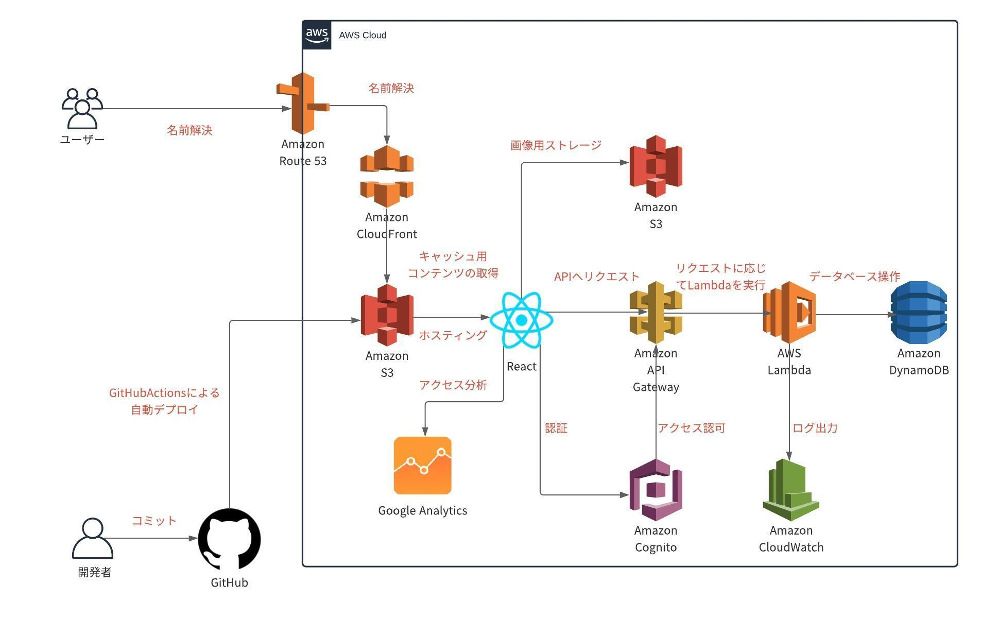

エンジニア向けタイピングゲームのサイトを作ってみた(後編)
2020/11/21
エンジニア向けタイピングゲームのサイトを作ってみたのでその使用技術や過程について書きます
まず、作ったサイトは↓です
前編はとりあえずサイトの機能や使い方の説明、後編はエンジニアやその他プログラミングの知識がある人向けに技術的な細かい話
前回の続きです
前回はサイトの概要や使い方を書きましたが、今回はどんな仕組みでサイトが動いてるのかについて専門用語たっぷりに書いてみます
用語の解説は省くのでわからない用語は各自調べていただければと思います
使用技術
フロントエンド
- React：SPA用フロントエンドフレームワーク
- Redux(ReduxToolKit)：Reactの状態管理
- TypeScript：言語
バックエンド
- DynamoDB：NoSQL
- APIgateway：APIエンドポイント
- Lambda：DB操作
- Cognito：認証
- S3：ストレージ
- CloudWatchLogs：ログ
インフラ
- CloudFront：CDN
- S3：ホスティング
- Route53：DNS
- GitHub：コード管理及びCI/CD
- GoogleAnalytics：アクセス解析
構成
図にするとこんな感じ
フロントエンドはReact、バックエンド及びインフラはAWS
SPAをS3でホスティングしてそこからサーバレスのAPIを叩くといった形であればごく一般的かなといった構成
CI/CDにはGitHubActionsを使用(Reactのビルド、S3へのデプロイ、CloudFrontのキャッシュの更新といった用途)しましたが、今のところ特に不満は無いです
以下、各分野で苦戦した点を挙げていきます
フロントエンド
前述の通りReactを使ってます
採用したきっかけはSPAのサイトを作ってみたかったのとVueやAngularよりなんとなく伸びる気がするという浅い理由から
状態管理には当然Reduxを使っていますが、作り始めてからReactの公式がHooksの利用を推奨したことが浸透してきたのでそれに合わせてコードを書き換えました
さらに、JavascriptではなくTypeScriptを採用しているのでこれら2つを覚えるという感じで学習コストはそこそこありました
その上で悩みの種となったのがReduxのディレクトリ構成です
これに関しては定番の悩みだと思いますが、コードが肥大化するにつれリファクタリングを繰り返し、二転三転した結果状態管理等のロジックと画面描画を切り分ける形をとりました
こういった感じでよりモダンで最新なReactの書き方を狙った結果、苦労した点がかなりあったので挙げてみます
- ReduxToolKitの日本語の情報の少なさ
- Hooksを用いたReactとTypeScriptの組み合わせに対する情報の少なさ
- 認証に使ったCognitoをReactから操作する際の情報の少なさ
まず１つ目のReduxToolKitについて
これは従来のReduxの面倒な書き方を簡略化してくれるという意味でかなり有用でした(Reduxの学習コストがグッと下がったイメージ)、ただ一方でできて日が浅いことから当然情報は少なく別の意味での難しさはありました(一度理解すれば本当に便利)
次に2つ目のHooksについて
これはHooksというよりはTypeScriptに苦戦したという方が正しい気がしますが、作り始めた当初Hooks自体の情報量がそれほど多くなかった上TypeScriptと組み合わせた情報はさらに少なかったことが辛かった
次に3つ目のCognitoについて
これも2つ目とほぼ同じですが、Cognitoをフロントから操作する際にTypeScriptを併用している記事なんかが本当に少なかったことで時間を削られた
まとめると、「新しく出た技術」＋「型情報が必要なTypeScript」という組み合わせで苦戦した感じです
バックエンド
前術の通りAWSでサーバレスです
これはシンプルなんで特に書くことは無いですが、強いて挙げると
- Cognitoのカスタム属性が更新されない問題
- NoSQLの辛み
まず1つ目のカスタム属性について
これはどういうことかと言うと、Cognitoでユーザーを削除した後に削除したユーザーと同じメールアドレスでユーザーを作成すると、先程削除したユーザーに設定されていたカスタム属性が新しく作ったはずのユーザーのカスタム属性に設定されてしまっていたという問題
これはサイトの機能上問題ないようには出来たんですが、この問題そのものは全く解決していないのでCognitoのバグだったりするのかなと思ってます
次に2つめのNoSQLの辛みについて
これは今更書くことでも無いですが、SQLで柔軟にテーブルを操作できるRDBMSに比べると今回のようなサービスだとNoSQLは辛い点が多かったです
テーブル設計も良くない点がかなりありますが、テーブルのスキャンを余儀なくされる場面が割とあってコスト的に良くない点が多かったです
また、ページネーション機能なんかも工夫が必要で楽しい反面不満もありました
インフラ
前述の通りほぼAWSを使ってます
これに関しては、「サーバーレス ≠ 手軽」という感想
サーバレスであればEC2とRDSを起動させておくような構成に比べて放置しても常時課金されず、オートスケーリングもある程度自動でやってくれるため手軽に見えますが、さっき述べたようなNoSQLの辛みなんかに直面するので費用面では手軽でも実装上は手軽とも限らないと感じました(使いどころが大事だと実感)
感想
最初の図にあるみたいに「サーバレスAPIをSPAから叩く独自ドメインのサイト」というシンプルな構成でもフロントエンドでは最新のReactの文法や状態管理、バックエンドでは主要なAWSのマネージドサービス、インフラでは独自ドメインのサイトをSSL化して公開する流れや仕組みというような知識を一度に得られるので、ある程度プログラミングを勉強したけど目標がないという人がトライしてみると収穫は多いのかなという感想です